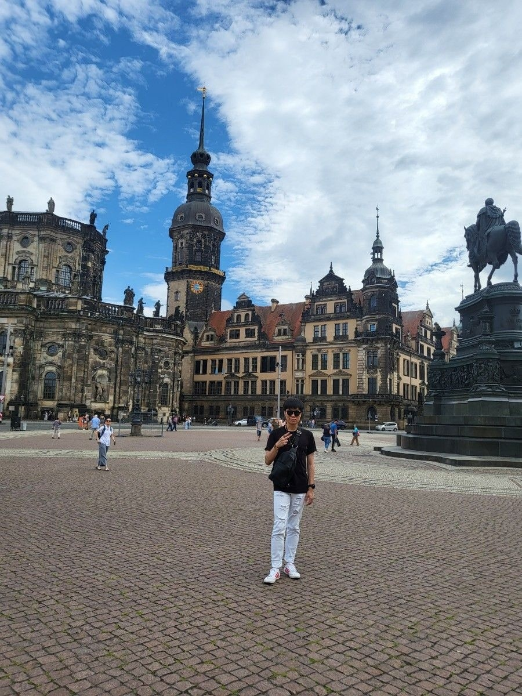

Sunjun Brian Hwang
an independent researcher in Vancouver, building on my undergraduate research at Yonsei University's RAISE Lab. What pulls me across so many fields — quantum computing, AI security, federated learning, autonomous driving — is the same gap each time: how a system is supposed to behave, and how it actually behaves under noise, adversarial pressure, hardware faults, or real-world constraints. That gap is where my research lives.
The Researcher
My Research Journey
I started in Computer Science at Yonsei in 2022 and joined the RAISE Lab in December 2024, working on reliable AI and quantum computing. After graduating in August 2026, I moved to Vancouver and kept the same research going as an independent researcher.
CS, with a Physics Core
My degree is in Computer Science, but I planned to double in Physics and took the courses that mattered most to me — Quantum Mechanics I & II among them. Physics gives me a vocabulary for uncertainty; CS lets me build with it. Quantum ML sits right where the two meet.
What I Want to Solve
- The gap between how a system is supposed to behave and how it actually behaves.
- Whether we can trust that system at all — under noise, attacks, or hardware faults.
- How to improve it once we know where it breaks.
- And in quantum, how to design it optimally from the start.
Theory ↔ Implementation
Every algorithm I study, I want to see running — on an FPGA, on a real NISQ device, in a federated learning client. Theory without implementation is incomplete; implementation without theory is brittle.
How I Approach Failure
When an experiment of mine fell apart, I was honestly discouraged. So I stepped away — took a trip, emptied my head, and came back properly refreshed. Then I changed direction, redesigned the experiment, and that version worked. Now I treat a failed run as a signal to rethink the design, not to push harder on the same one.
I Document Obsessively
This site is one of several I maintain — a CV, a research portal, a Wiki, guides, paper reviews, and a conference tracker, all in the sidebar. Half of them started as notes to my future self.
The Person
Why I Chose Research
No million-dollar business idea has ever come to me. But I have the room to think — and with that room, research is the most interesting thing I can imagine doing. I get to chase questions instead of revenue.
The Cat in the Favicon
Because Schrödinger. Quantum mechanics was the first time physics felt both rigorous and beautifully strange — a system that is neither this nor that until you look. The cat on every tab is a daily reminder of what got me here.
Small Joys
Watching a younger sibling or junior happily eat a meal I bought. Seeing a junior finally crack a problem they asked me about a week earlier. The small wins are the real ones.
Beyond Research
I play electric guitar, bass, and drums — usually loud enough that the neighbors can tell a paper deadline has just passed.
A Lifelong Student
Graduating didn't end the coursework. I keep stacking online specializations — Stanford, Johns Hopkins, University of Toronto and more (see Awards) — and I'm now at ILSC Vancouver sharpening my academic English.
Languages I Speak
My Roots & Travel
I grew up in Seoul, and my next goal is to build my research career in the United States. In between, I travel abroad at least four times a year — different cities, languages, and food keep me curious.
Let's Talk
I'm the older-brother type who genuinely enjoys helping people figure things out. Happy to talk about Bell inequalities, your latest paper draft, or just how your week has been — research and casual conversations are equally welcome.
"When something is important enough, you do it even if the odds are not in your favor." — Elon MuskWhy this line stuck with me: I first ran into it when I was deciding whether to push a research direction that nobody around me believed in. It reminded me that most meaningful work looks irrational from the outside — and that the only honest way to find out whether it's worth doing is to do it. I come back to it every time the odds for a paper, a project, or just an idea start looking thin.